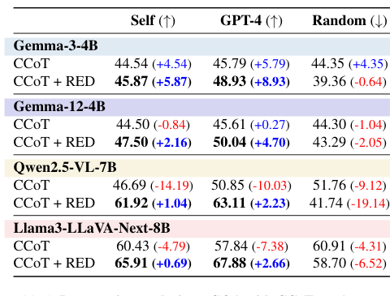
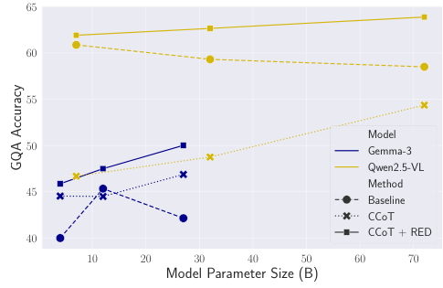
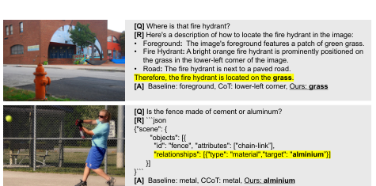

1. CoT rationales are not always used
Attention contribution analysis shows that when image and rationale tokens are both present, LVLMs can focus mostly on the image and reduce the influence of rationale tokens.
Large vision-language models (LVLMs) are commonly prompted to generate intermediate rationales before answering visual questions. However, this paper finds that standard multimodal chain-of-thought (CoT) can fail to ground the final answer in those rationales: replacing a rationale with an irrelevant one can leave performance almost unchanged.
Rationale-Enhanced Decoding (RED) addresses this failure at inference time, without additional training or architectural changes. RED composes two next-token distributions: one conditioned on the image and query, and one conditioned on the rationale and query. The resulting decoder encourages tokens that are supported by both visual evidence and the generated rationale.
Instead of decoding with a single distribution \(p(y_i \mid y_{\lt i}, x, r, q)\), RED uses a product-of-experts form:
\[\hat{p}_\\theta(y_i) \propto p_\\theta(y_i \mid y_{\lt i}, x, q) \; p_\\theta(y_i \mid y_{\lt i}, r, q)^\lambda\]
This is derived as the optimal solution to a KL-constrained reward maximization objective where rationale-conditional likelihood acts as the reward.
Attention contribution analysis shows that when image and rationale tokens are both present, LVLMs can focus mostly on the image and reduce the influence of rationale tokens.
Swapping in rationales from other examples often preserves standard CoT performance, suggesting that the final answer is not semantically grounded in the rationale.
RED modifies only decoding. It can be applied to off-the-shelf LVLMs and arbitrary rationale formats, including free-form descriptions and scene graphs.
RED first generates a rationale using a standard multimodal CoT prompt. During answer generation, it runs two conditional predictions: an image-conditional branch \(p_\\theta(y_i \mid y_{\lt i}, x, q)\) and a rationale-conditional branch \(p_\\theta(y_i \mid y_{\lt i}, r, q)\).
The log-softmax logits from the two branches are added with rationale weight \(\lambda\):
\[\hat{\ell}_\\theta(y_i) = \log \mathrm{softmax}(\ell_\\theta(y_i \mid y_{\lt i}, x, q)) + \lambda \log \mathrm{softmax}(\ell_\\theta(y_i \mid y_{\lt i}, r, q))\]
The next token is sampled or greedily selected from \(\mathrm{softmax}(\hat{\ell}_\\theta)\). This simple change makes the output prefer tokens jointly supported by image evidence and rationale evidence.
r = generate(model, image, query)
y = []
while not finished:
logits_img = model(image, query, y)
logits_rat = model(rationale=r, query=query, y=y)
red_logits = log_softmax(logits_img) \
+ lambda * log_softmax(logits_rat)
y.append(decode(red_logits))Across general visual reasoning, text-rich VQA, mathematical reasoning, hallucination benchmarks, and larger LVLMs, RED consistently improves over standard CoT and competitive plug-and-play decoding baselines.


When the rationale contains the decisive evidence, standard CoT can still answer incorrectly. RED uses the rationale content during decoding, producing answers aligned with the generated reasoning.

@inproceedings{Yamaguchi_CVPR26_RED,
title = {Rationale-Enhanced Decoding for Multi-modal Chain-of-Thought},
author = {Yamaguchi, Shin'ya and Nishida, Kosuke and Chijiwa, Daiki},
booktitle = {Proceedings of the IEEE/CVF Conference on Computer Vision and Pattern Recognition},
year = {2026}
}